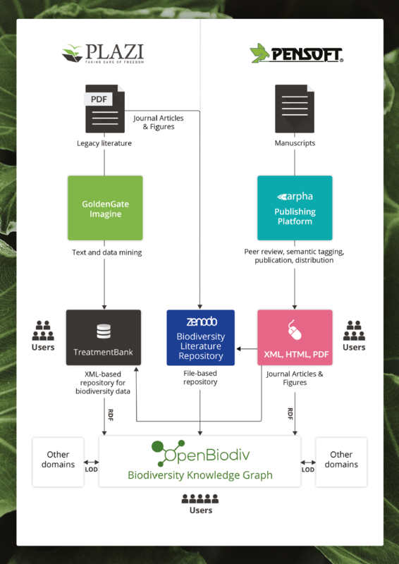

Pensoft and Plazi join forces to expedite building the OpenBioDiv

Pensoft - Plazi project to produce semantically enhanced data
Open Science is based on open data. Data per se is not copyrighted and thus freely accessible. However it is kept in well maintained prisons, such as hard disks on a scientist’s desk to large password protected databases to publications that lost all their semantic structure in transition from a scientists lab to the publishers print shop. To paraphrase, scientist do all to loose structure in their data in publications.
Plazi does the opposite: it does all to discover data in publications and make it machine readable, ready for Open Science. The increasing amount of extracted, cited and reused data in the Biodiversity Literature Repository with over 170,000 illustrations extracted and open accessible or the many taxonomic treatment in TreatmentBank (220,000) and reused in GBIF is a promising sign that this kind of extraction at production level is possible.
Pensoft is one of the world’s leading scientific publishers that begun in 2010 to publish semantically enhanced publications: publications that can be understood by machine and parts that can immediately be reused.
As a spin-off from pro-iBiosphere, a European Union Framework Program 7 project, Pensoft and Plazi together continued to implement the initiated Open Biodiversity Knowledge Management System OpenBiodDiv. OpenBiodiv is based on Linked Open Data Technology, a triple store where all the facts are stored, and an interface that allows to create simple to complex queries to efficiently use all the data in publications.
Publishing and extracting data and make it widely accessible comes at a cost. Using complementary technology to deal with prospective publications and legacy publications respectively, Pensoft and Plazi join forces to offer a highly customizable service from publishing directly semantically enhanced articles, to converting unstructured publications into findable, accessible, interoperable and reusable data. The data is accessible through the Biodiversity Literature Repository, TreatmentBank or OpenBioDiv.
Links: